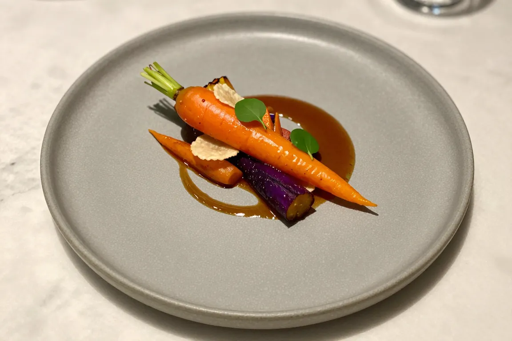

cuisine · 2021–present · also: Vegan tasting menu, Plant-led haute cuisine, Fine dining without animal products
A tasting-menu kitchen that uses no meat, fish, dairy, egg or honey. It gives the luxury of the old menu to vegetables, grains, nuts and ferments. Eleven Madison Park in New York changed to such a menu in 2021 under Daniel Humm, and put some animal products back in 2025.

Core thesis
The top of the table does not need an animal: with skill, time and ferments, a carrot, a beet or a nut can carry the weight that foie gras and beef once carried.
Design principles
Use no meat, fish, dairy, egg or honey, and tell the guest.
Take the old luxury forms and cook them again from plants: a tartare, a roast, a sauce with body.
Build depth with ferments, koji, smoke, dried mushrooms and long roasting.
Make the sauces from nuts, seeds, oils and vegetable stocks, not from butter or cream.
Buy from farms near the city, and change the menu with the harvest.
Serve with the same care and the same ritual as a classic tasting menu: a tableside step, a clear story.
Count the weight of the dish in taste and satisfaction, not in meat.
Anti-patterns
A meat substitute that copies the look of meat with no taste of its own
A plate that looks like a side dish with the main dish taken away
Butter, cream, egg or honey in a hidden form
A dish that is only raw or only boiled vegetables
A menu that tells the guest what it does not have
A rustic plate in a formal room, without a clear idea